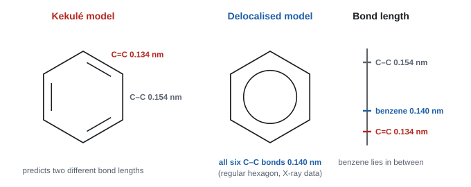
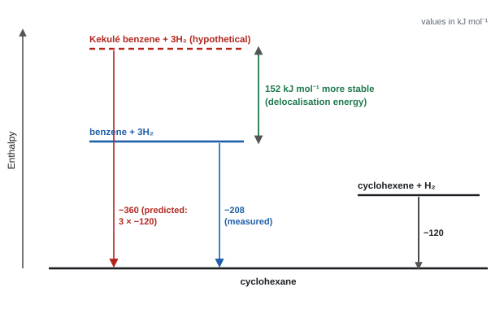
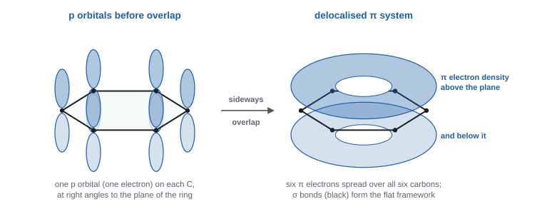
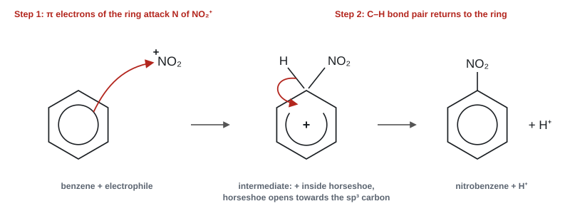

Arenes
Benzene has six carbons and three apparent double bonds, yet it refuses to react like an alkene. This topic explains why: its electrons are spread around the whole ring, which makes it unusually stable and steers it towards substitution rather than addition. It also covers the reactions that put new groups onto the ring, and why phenol reacts so much more readily.
Spec18.1Evidence for the structure and stability of benzene
Use enthalpy (thermochemical) data, X-ray diffraction data and infrared data as evidence for the structure of the benzene ring and for its extra stability.
Two models of benzene
- Benzene is C₆H₆: six carbons in a flat ring, each carbon bonded to one hydrogen.
- Kekulé model: a ring of alternating C=C double and C–C single bonds (cyclohexa-1,3,5-triene). If this were right, benzene would behave like an alkene with three separate double bonds.
- Delocalised model: all six C–C bonds are identical. Six π electrons are spread over the whole ring (18.2). You can draw benzene either way in equations and mechanisms, but the evidence below supports the delocalised model.

Every answer on this spec point has the same shape: "Kekulé predicts X, the measurement shows Y, so the bonds are delocalised."
Evidence 1: enthalpy change of hydrogenation
- Cyclohexene (one C=C) + H₂ → cyclohexane: ΔH = −120 kJ mol⁻¹.
- A Kekulé benzene has three C=C bonds, so it should give 3 × (−120) = −360 kJ mol⁻¹.
- The measured value for benzene is only −208 kJ mol⁻¹: 152 kJ mol⁻¹ less exothermic than predicted.
- So less energy is released, which means benzene started lower in energy: it is more stable than the Kekulé structure. This extra stability is the delocalisation energy (also called resonance energy or stabilisation energy).

Worked example: stabilisation from hydrogenation data
Data: cyclohexene → cyclohexane, ΔH = −118 kJ mol⁻¹; benzene → cyclohexane, ΔH = −205 kJ mol⁻¹.
Kekulé prediction = 3 × (−118) = −354 kJ mol⁻¹.
Difference = −205 − (−354) = +149 kJ mol⁻¹.
Benzene's hydrogenation is 149 kJ mol⁻¹ less exothermic than expected, so benzene is 149 kJ mol⁻¹ more stable than the Kekulé structure, because its π electrons are delocalised.
Papers use slightly different data (−118/−205 or −120/−208). Always use the numbers in the question.
Worked example: the same idea from enthalpies of combustion
ΔcH: cyclohexene −3752, cyclohexa-1,4-diene −3584, benzene −3267 kJ mol⁻¹.
- Each extra C=C makes ΔcH less negative, because there are two fewer H atoms to burn. Cyclohexene − diene: −3752 − (−3584) = −168 kJ mol⁻¹, so each extra C=C is worth 168 kJ mol⁻¹.
- Predicted ΔcH for a Kekulé triene = −3584 − (−168) = −3416 kJ mol⁻¹.
- Benzene's real value is −3267, so it releases 3416 − 3267 = 149 kJ mol⁻¹ less energy on combustion.
- Benzene is 149 kJ mol⁻¹ more stable than the Kekulé structure, because of delocalisation (WCH15 Jun 2021).
Evidence 2: X-ray diffraction (bond lengths)
- X-ray diffraction maps the electron density, so it gives bond lengths.
- Kekulé predicts two lengths: three short C=C (0.134 nm) and three long C–C (0.154 nm), giving an irregular hexagon.
- Benzene has six equal C–C bonds of 0.140 nm: a regular hexagon. The length is in between a single and a double bond.
Evidence 3: infrared spectrum
- An alkene C=C stretch absorbs at about 1669–1645 cm⁻¹ (Data Booklet). Benzene shows no absorption there.
- Instead it has the arene peaks at about 1600, 1580, 1500 and 1450 cm⁻¹ and an arene C–H stretch near 3030 cm⁻¹. These show a different kind of carbon–carbon bond from an alkene's.
Evidence 4: chemical behaviour
- Benzene does not decolourise bromine water, and it needs a catalyst to react with bromine at all. It reacts by substitution, not addition. An alkene with localised C=C bonds would add bromine at once (see 18.3).
- Thermochemistry: Kekulé expected "3 × −118 = −354" (or 3 × −120 = −360); benzene is "149 / 152 kJ mol⁻¹ less exothermic than expected" or "more stable than expected"; reason "the π electrons are delocalised". "Delocalisation energy" or "resonance stability" is accepted.
- Use comparative words: "less exothermic", "less negative", "more stable". "Higher" or "lower" on their own are not accepted.
- X-ray: "bond lengths in benzene are equal", "in between C=C and C–C" or "longer than C=C in cyclohexene"; and say what Kekulé predicts: "Kekulé structure would have shorter double bonds and longer single bonds". "Regular hexagon" is accepted; "bond lengths are similar" is not.
- IR: specific arene wavenumbers, and no C=C alkene peak.
Often asked as: the 6-mark "evidence for benzene's structure" (WCH15 Jun 2023), a hydrogenation or combustion calculation, explain X-ray data, MCQs on bond lengths.
Comparing benzene's −208 with cyclohexene's −120. The comparison is with the hypothetical Kekulé triene (−360).
Drawing the enthalpy-level diagram as a reaction profile with a hump. It is a set of horizontal levels with vertical arrows.
Saying X-ray shows "the bonds are the same" without saying what Kekulé would show. The "Kekulé double bonds would be shorter" half-mark is the one most often missed (Jan 2024 report).
- Isomer count: a Kekulé structure would give two isomers of 1,2-dichlorobenzene (Cl atoms across a C=C or across a C–C). Only one exists (WCH15 Jan 2024).
- Conjugated dienes: cyclohexa-1,3-diene is only about 8 kJ mol⁻¹ more stable than 2 × (−120) predicts, because its two C=C bonds are conjugated but not a closed ring. Benzene's continuous ring of delocalisation is much more effective (WCH15 Jan 2026).
- Bond enthalpy cycle: the mean aromatic C–C bond enthalpy (about 507 kJ mol⁻¹) comes out higher than the average of C–C and C=C (about 480), again because of delocalisation (WCH15 Jun 2025).
- Dewar and Ladenburg benzene: other proposed C₆H₆ structures. Bromine water or NMR shows they are not benzene: benzene's H atoms all appear at about 7.3 ppm (WCH15 Oct 2021).
Spec18.2The delocalised model: overlap of p orbitals
Understand that the delocalised model of benzene involves sideways overlap of p orbitals to form π bonds.
Building the model
- Each carbon uses three of its four outer electrons to form σ bonds: two to neighbouring carbons and one to a hydrogen. This gives a flat (planar) ring with bond angles of 120°.
- Each carbon has one electron left in a p orbital. The p orbital sticks out above and below the plane of the ring, at right angles to it.
- Each p orbital overlaps sideways with the p orbitals on both neighbouring carbons, not just one.
- The result is a continuous ring of π electron density above and below the plane, holding six delocalised π electrons shared by all six carbons.

- Because every carbon shares in the same π system, all C–C bonds are the same length (0.140 nm).
- Delocalisation spreads the electrons over a bigger region, which lowers the energy. That is the source of the extra stability in 18.1.
- The circle in the hexagon stands for the six delocalised electrons.
In an alkene, the p orbitals on two carbons overlap to make one localised π bond. In benzene, the p orbitals on six carbons overlap all round the ring. Use that contrast whenever 18.2 and 18.3 come up together.
- "six σ bonds between carbon atoms" (the flat framework), "six p (pz) orbitals not involved in σ bonding", "overlap (continuously) above and below the ring" to form "a (large) π system". All marks can come from a labelled diagram.
- Hybridisation language ("sp² orbitals overlap head-on") is accepted although not on the spec. "π orbitals" is not accepted.
Often asked as: describe and explain the bonding (2–3 marks, WCH15 Jan 2024, Jun 2025); MCQs on sideways overlap and on counting bonds.
Unlabelled diagrams, and leaving out the σ framework. Say what the σ bonds are as well as the π system (Jan 2024 report).
Saying "p orbitals overlap end-on". End-on overlap makes σ bonds; π bonds come from sideways overlap.
Counting bonds: benzene has 12 σ bonds (6 C–C + 6 C–H). Drawn as Kekulé it has 3 π bonds (WCH15 Jun 2022 MCQ).
Spec18.3Why benzene resists bromination
Explain why benzene reacts with bromine much less readily than an alkene does: delocalised π electrons in benzene, localised π electron density in an alkene.
Alkene: localised π bond
- In cyclohexene, the two π electrons sit between just two carbons, so the electron density there is high.
- When a Br₂ molecule approaches, this concentrated negative charge repels the electrons in Br–Br and induces a dipole (Brδ+–Brδ−).
- The π electrons attack the δ+ bromine. The alkene adds bromine at room temperature: electrophilic addition. Bromine water is decolourised at once.
Benzene: delocalised π system
- Benzene's six π electrons are spread over six carbons, so the electron density between any two carbons is lower.
- The ring cannot polarise Br₂ enough to start a reaction. Benzene doesn't react with bromine water.
- Addition would also destroy the delocalised ring and lose about 150 kJ mol⁻¹ of stability. So the activation energy is high and benzene is kinetically stable.
- With a halogen carrier (FeBr₃) to make a much stronger electrophile, Br⁺, benzene does react. It undergoes electrophilic substitution: an H atom is replaced and the stable ring is kept (18.4, 18.5).
Model answer (benzene v cyclohexene with bromine):
- Both react with electrophiles because both have π electrons.
- Cyclohexene has localised π electron density in one C=C bond, high enough to polarise Br₂. It reacts at room temperature with no catalyst by electrophilic addition (product 1,2-dibromocyclohexane).
- Benzene's π electrons are delocalised over the ring, so the electron density is lower and it cannot polarise Br₂. It needs a catalyst (FeBr₃) and reacts by electrophilic substitution (bromobenzene + HBr), because substitution keeps the stable delocalised ring.
Indicative points from the 6-mark "cyclohexene, benzene and phenol with bromine" (WCH15 Oct 2022, Oct 2023, Jan 2025):
- "all are attacked by / react with electrophiles";
- "cyclohexene undergoes addition", "benzene and phenol undergo substitution";
- "cyclohexene and phenol react with (aqueous) bromine without a catalyst; benzene needs a catalyst";
- "benzene has delocalised electrons and is (kinetically) stable, so the reaction has a high activation energy";
- "cyclohexene has localised electron density in one π bond";
- phenol: "lone pair on the oxygen overlaps with the ring, increasing electron density" (18.6).
A similarity or a difference given for one compound only, with no comparison, loses the reasoning mark. "Nucleophilic" is never accepted.
Often asked as: a 6-mark compare-and-contrast, or a 4-mark "compare the reactions of benzene and cyclohexene with bromine" (WCH15 Jun 2021).
"Benzene doesn't decolourise bromine, but cyclohexene does" is an observation, not an explanation. Give the electron-density reason too.
Leaving out the word electrophilic ("benzene undergoes substitution").
Writing cyclohexane or cyclohexa-1,3,5-triene when you mean cyclohexene. Giving dibromobenzene as the product of benzene.
Writing out full mechanisms in a 6-mark answer that didn't ask for them: it wastes time and any error costs a mark (Oct 2022 report).
Kinetic v thermodynamic stability: the delocalised system makes the activation energy for forming the intermediate high, so benzene is kinetically stable (WCH15 Jun 2021 MCQ). And HBr is a by-product of substitution, but not of addition (WCH15 Jan 2025).
Spec18.4Reactions of benzene
Know these reactions of benzene: (i) combustion in air (smoky flame); (ii) bromine with a catalyst; (iii) a mixture of concentrated nitric and sulfuric acids; (iv) fuming sulfuric acid; (v) halogenoalkanes and acyl chlorides with aluminium chloride (Friedel–Crafts). Know the common uses of the products.
(i) Combustion
2C₆H₆(l) + 15O₂(g) → 12CO₂(g) + 6H₂O(l)
- Benzene burns with a very smoky (sooty), yellow flame.
- Its C : H ratio is high (1 : 1), so there isn't enough oxygen in air for complete combustion. Unburnt carbon (soot) forms.
- A sooty flame is a quick test for an arene in an unknown (WCH15 Jun 2022).
(ii) Halogenation (bromination)
C₆H₆ + Br₂ → C₆H₅Br + HBr
- Reagent: bromine (liquid). Catalyst (halogen carrier): FeBr₃ (or iron filings, which react with Br₂ to make FeBr₃), or AlBr₃. Room temperature, dry (anhydrous) conditions.
- Observations: the orange-brown colour fades; steamy fumes of HBr are given off.
- Chlorination works the same way with Cl₂ and AlCl₃ or FeCl₃, giving chlorobenzene.
- Product: bromobenzene. It is a route into Grignard chemistry (C₆H₅MgBr, 20.2).
(iii) Nitration
C₆H₆ + HNO₃ → C₆H₅NO₂ + H₂O
- Reagents: concentrated nitric acid and concentrated sulfuric acid (the "nitrating mixture"). The sulfuric acid is a catalyst that generates the electrophile NO₂⁺.
- Conditions: warm at about 50–55 °C. Keep it below about 55 °C to stop further substitution (dinitrobenzene). Add the benzene slowly and cool the flask, because the reaction is exothermic.
- Product: nitrobenzene, a pale yellow oily liquid.
- Uses: reduced to phenylamine (19.5), which is used to make dyes (19.6) and drugs. Multiple nitration of methylbenzene gives the explosive TNT.
(iv) Sulfonation
C₆H₆ + SO₃ → C₆H₅SO₃H (or C₆H₆ + H₂SO₄ → C₆H₅SO₃H + H₂O)
- Reagent: fuming sulfuric acid (oleum: concentrated H₂SO₄ with dissolved SO₃). Warm, about 40 °C. The electrophile is SO₃ (or HSO₃⁺).
- Product: benzenesulfonic acid. The –SO₃H group is joined to the ring through sulfur.
- Uses: alkylbenzenesulfonic acids (as their sodium salts) are detergents. Sulfonate groups also make dyes soluble in water (WCH15 Jun 2025).
(v) Friedel–Crafts reactions
Both need anhydrous aluminium chloride, AlCl₃, as catalyst (a halogen carrier). Heat under reflux in dry conditions, because water destroys AlCl₃.
| Alkylation | Acylation | |
|---|---|---|
| Reagent | halogenoalkane, e.g. chloromethane CH₃Cl | acyl chloride, e.g. ethanoyl chloride CH₃COCl |
| Equation | C₆H₆ + CH₃Cl → C₆H₅CH₃ + HCl | C₆H₆ + CH₃COCl → C₆H₅COCH₃ + HCl |
| Product | methylbenzene (an alkylbenzene) | phenylethanone (an aromatic ketone) |
| Electrophile | CH₃⁺ (a carbocation) | CH₃CO⁺ (an acylium ion) |
- Friedel–Crafts is the way to make a new C–C bond to a benzene ring.
- Uses: ethylbenzene (from chloroethane) is turned into phenylethene, the monomer for poly(phenylethene) (polystyrene). The ketone from acylation can be reduced to an alcohol with NaBH₄.
Summary table
| Reaction | Reagents and conditions | Electrophile | Organic product | By-product |
|---|---|---|---|---|
| Bromination | Br₂, FeBr₃ catalyst, room temp. | Br⁺ | bromobenzene | HBr |
| Nitration | conc. HNO₃ + conc. H₂SO₄, 50–55 °C | NO₂⁺ | nitrobenzene | H₂O |
| Sulfonation | fuming H₂SO₄, warm | SO₃ | benzenesulfonic acid | (none, with SO₃) |
| Alkylation | RCl + anhydrous AlCl₃, reflux | R⁺ | alkylbenzene | HCl |
| Acylation | RCOCl + anhydrous AlCl₃, reflux | RCO⁺ | phenyl ketone | HCl |
All except combustion are electrophilic substitutions: one H on the ring is swapped for another group, and the delocalised ring survives.
- Nitration: "concentrated sulfuric acid" (dilute is not accepted) and the electrophile "nitronium ion / NO₂⁺" (WCH15 Jan 2024).
- Temperature for nitrating methylbenzene: "below 30 °C ... to prevent further substitutions" (methylbenzene's ring is more reactive than benzene's). "Reagents decompose" is ignored (WCH15 Jun 2022).
- Sulfonation: "(concentrated) sulfuric acid" or "fuming sulfuric acid / oleum / H₂S₂O₇"; the product has SO₃H bonded through S (WCH15 Jun 2024).
- Friedel–Crafts methylation: "CH₃Cl / chloromethane" + "AlCl₃" (CH₃Br, CH₃I, AlBr₃, FeBr₃, FeCl₃ accepted). Chloroethane for a methyl group, or "a halogenoalkane" with no name, is not accepted (WCH15 Jan 2025).
- Sooty flame "indicates an arene / high C : H ratio" (WCH15 Jun 2022).
Often asked as: reagents and conditions for a step in a synthesis, the product of a given reagent, name the electrophile, why the temperature is controlled.
Leaving out "concentrated" for the sulfuric acid in nitration (Jan 2024 report).
Choosing chloroethane when the product needs a methyl group: count the carbons (Jan 2025 report).
Calling bromination "Friedel–Crafts". Friedel–Crafts means alkylation or acylation (Jun 2023 report).
Drawing the sulfonic acid group joined through O, or on the wrong carbon (Jun 2024 report).
- Substituted rings (methylbenzene, methoxybenzene): they react faster than benzene and substitute mainly at the 2- and 4-positions. The 4-product is often the major one because a group next to the substituent is sterically hindered (WCH15 Jan 2026, acylation of methoxybenzene).
- Side-chain oxidation: methylbenzene heated under reflux with potassium manganate(VII), then acidified, gives benzoic acid (WCH15 Jan 2023).
- Benzoic acid from benzene: Br₂/FeBr₃ → bromobenzene; Mg in dry ether → C₆H₅MgBr; CO₂ then dilute acid → C₆H₅COOH (WCH15 Jan 2022, Oct 2023).
- Limiting reagent in a Friedel–Crafts prep: methoxybenzene 5.25 ÷ 108 = 0.0486 mol against ethanoyl chloride 4.50 ÷ 78.5 = 0.0573 mol, so methoxybenzene is limiting (WCH15 Jan 2026).
Spec18.5Electrophilic substitution mechanisms
Understand the electrophilic substitution mechanism for halogenation, nitration and Friedel–Crafts reactions of benzene, including how each electrophile is generated.
The pattern: three stages
- Make the electrophile (a positive ion, E⁺) using the catalyst.
- Attack: the π electrons of the ring attack E⁺. A positive intermediate forms and the delocalised ring is partly broken.
- Restore the ring: the C–H bond breaks, H⁺ is lost, and the delocalised ring re-forms. The H⁺ regenerates the catalyst.
Stage 1: generating each electrophile
| Reaction | Equation for the electrophile | Catalyst regenerated by |
|---|---|---|
| Nitration | HNO₃ + 2H₂SO₄ → NO₂⁺ + 2HSO₄⁻ + H₃O⁺ | H⁺ + HSO₄⁻ → H₂SO₄ |
| Bromination | Br₂ + FeBr₃ → Br⁺ + FeBr₄⁻ | H⁺ + FeBr₄⁻ → FeBr₃ + HBr |
| Alkylation | CH₃Cl + AlCl₃ → CH₃⁺ + AlCl₄⁻ | H⁺ + AlCl₄⁻ → AlCl₃ + HCl |
| Acylation | CH₃COCl + AlCl₃ → CH₃CO⁺ + AlCl₄⁻ | H⁺ + AlCl₄⁻ → AlCl₃ + HCl |
- Nitration: sulfuric acid is the stronger acid, so it protonates nitric acid. The protonated nitric acid (H₂NO₃⁺) loses water to give the nitronium ion, NO₂⁺. A simpler version is also accepted: HNO₃ + H₂SO₄ → NO₂⁺ + HSO₄⁻ + H₂O.
- Halogenation: FeBr₃ (or AlCl₃) has an incomplete outer shell, so it accepts a lone pair from one Br atom. This polarises and breaks Br–Br, leaving Br⁺. Writing it as Brδ+–Brδ−···FeBr₃ is also accepted.
- Friedel–Crafts: AlCl₃ takes the chlorine (with its bonding pair) from the C–Cl bond. That leaves a positive carbon: a carbocation R⁺ or an acylium ion RCO⁺ (the + is on the carbonyl carbon).
Stages 2 and 3: the mechanism with curly arrows

Step 1: attack on the electrophile
- Draw a curly arrow starting inside the hexagon (on or within the circle) and ending at the positive atom of the electrophile: the N of NO₂⁺, the Br of Br⁺, the C of CH₃⁺ or CH₃CO⁺.
- Two of the π electrons form a new bond from one ring carbon to E.
The intermediate
- The carbon now bonded to both H and E is sp³ (tetrahedral), so it is no longer part of the delocalised system. Draw both atoms on it.
- The other five carbons share four π electrons and a positive charge. Draw a horseshoe (a partial circle) over these five carbons, with its gap facing the tetrahedral carbon, and put the + inside the horseshoe.
Step 2: loss of H⁺
- Draw a curly arrow from the C–H bond (the middle of the bond, not the H atom) back into the ring. The bonding pair restores the full delocalised ring.
- Products: the substituted arene (e.g. nitrobenzene) and H⁺. The H⁺ then regenerates the catalyst (table above).
Why substitution, not addition?
The intermediate could gain a negative ion (addition), but then the product would have lost its delocalised ring. Losing H⁺ restores the delocalised ring, with its extra stability of about 150 kJ mol⁻¹, so substitution wins.
Mechanism checklist (each item is a marking point):
- Arrow 1 starts inside the hexagon, not on the edge or outside it.
- Arrow 1 ends on the positive atom (N of NO₂⁺, C of CH₃⁺ or CH₃CO⁺), never on an O or on a lone pair.
- Electrophile shown with its + charge.
- Horseshoe covers at least three carbons (ideally five), open towards the sp³ carbon, + inside.
- Both H and E on the sp³ carbon.
- Arrow 2 starts on the C–H bond and goes into the ring. Use a full (double-headed) arrow: both electrons move.
- H⁺ as a product, then the catalyst-regeneration equation.
- "curly arrow from on or within the circle / hexagon to the positively charged atom (N of NO₂⁺; C of the acylium ion)";
- "intermediate ... horseshoe covering at least 3 carbon atoms and facing the tetrahedral carbon, with some part of the positive charge within the horseshoe";
- "curly arrow from C–H bond to anywhere in the ring reforming the delocalised structure";
- electrophile equation, e.g. "CH₃COCl + AlCl₃ → CH₃C⁺O + AlCl₄⁻", and regeneration "H⁺ + AlCl₄⁻ → AlCl₃ + HCl".
- Not awarded: an arrow starting on or outside the hexagon; a missing + on the electrophile; an arrow to the O of NO₂⁺; dotted C–H bonds; substituents on the wrong carbon.
- Error-spotting (WCH15 Jun 2022): the arrow drawn from CH₃⁺ to the ring was "the wrong direction" (the ring is electron-rich, CH₃⁺ is the electrophile with no lone pair). A single-headed arrow from the C–H bond is wrong because both electrons move (a half arrow means a radical). "Justify" needs the reason, not just the circled error.
Often asked as: the full 4–5 mark mechanism for nitration, bromination or acylation, nearly every series; find and fix the errors in a drawn mechanism; the equation for making NO₂⁺.
Starting arrow 1 from the electrophile, or aiming it at the O of NO₂⁺ (Jan 2023, Jan 2025 reports).
The horseshoe's gap facing the wrong way, or the + drawn outside it, or left on the NO₂ group (Oct 2020, Jun 2024 reports).
Starting arrow 2 from the H atom instead of the C–H bond (Jan 2025 report).
Adding an extra carbon to the electrophile in Friedel–Crafts, e.g. writing CH₃CH₂CO⁺ for ethanoyl chloride (Oct 2024 report).
Forgetting to show the catalyst being regenerated.
- Unfamiliar electrophiles: CO + HCl with AlCl₃ gives the formyl cation HCO⁺, which adds a –CHO group to the ring (WCH15 Oct 2022). Treat any new electrophile exactly like NO₂⁺: arrow to its positive atom.
- A carbocation from an alkene can also be the electrophile, e.g. when AlCl₃ and a chloro-acid are used (WCH15 Jan 2021).
- Substituted rings: put the substituent and E on the correct carbons in the intermediate. For phenol, the new group goes at position 2 or 4 (WCH15 Jan 2023).
Spec18.6Phenol and bromine water
Understand the reaction of phenol with bromine water, and why phenol reacts much more easily than benzene.
The reaction
C₆H₅OH + 3Br₂ → C₆H₂Br₃OH + 3HBr
- Conditions: bromine water, room temperature, no catalyst.
- Observations: the bromine water decolourises (orange → colourless), and a white precipitate of 2,4,6-tribromophenol forms. It smells of antiseptic.
- Three H atoms are substituted, at positions 2, 4 and 6 (the carbons next to and opposite the –OH). Carbon 1 carries the OH.
Why phenol reacts more easily than benzene
- One lone pair on the oxygen atom of the –OH group sits in a p orbital that overlaps with the π system of the ring.
- The lone pair becomes partly delocalised into the ring, which increases the electron density of the ring (most at positions 2, 4 and 6).
- The electron-rich ring can polarise Br₂ molecules by itself, so no halogen carrier is needed, and it attracts electrophiles more strongly.
- So phenol undergoes electrophilic substitution much more readily than benzene, and substitutes three times.
| Benzene | Phenol | |
|---|---|---|
| Reagent | Br₂ (liquid) | bromine water |
| Catalyst | FeBr₃ needed | none |
| Product | bromobenzene (one Br) | 2,4,6-tribromophenol (three Br) |
| Observation | slow; HBr fumes | instant decolourisation, white precipitate |
- "lone pair of electrons on the oxygen"; "overlaps / interacts with the (π) electrons of the ring"; "increasing the electron density of the ring"; "so phenol is more susceptible to electrophilic attack" (WCH15 Jun 2024).
- Product: "2,4,6-tribromophenol" (Kekulé drawing accepted); equation "C₆H₅OH + 3Br₂ → C₆H₂Br₃OH + 3HBr".
- Ignored: "increases the reactivity of the ring", "phenol is a nucleophile", "milder conditions" alone, "quicker / easier". Not accepted: "charge density increases", "the ring becomes more electronegative", "electrophilic addition".
Often asked as: name or draw the product (1–2 marks), explain the greater reactivity (2–3 marks), or the 6-mark comparison of cyclohexene, benzene and phenol (WCH15 Oct 2022, Oct 2023, Jan 2025).
Write "a lone pair on the oxygen atom", not "a lone pair on the OH": one mark scheme refused that wording (WCH15 Jan 2025).
Stating "the lone pair" without saying where it is, or not linking the lone pair to higher electron density in the ring (Jan 2024, Jan 2023 reports).
Writing "long pair". Drawing the Br atoms at positions 2, 3 and 4.
- Phenylamine does the same thing with bromine water: the lone pair on N activates the ring, giving a white precipitate of 2,4,6-tribromophenylamine.
- Nitration of phenol needs only dilute nitric acid at room temperature and gives a mixture of 2-nitrophenol and 4-nitrophenol (WCH15 Jan 2023). Draw the NO₂ on carbon 2 or 4, never on the carbon carrying the OH.
- Methoxybenzene (C₆H₅OCH₃) is activated in the same way by the O lone pair. The spec suggests it, or methylbenzene, for practical work instead of the more hazardous benzene.
Quick checks
Which observation is the best evidence that benzene's six C–C bonds are identical?
Kekulé's structure would have three short C=C and three long C–C bonds. One intermediate length shows the π electrons are spread evenly round the ring.
The enthalpy of hydrogenation of cyclohexene is −120 kJ mol−1 and of benzene −208 kJ mol−1. What is the delocalisation energy of benzene?
Three C=C bonds would release 3 × 120 = 360 kJ mol−1; benzene releases 208, so it is 360 − 208 = 152 kJ mol−1 more stable. 88 is 208 − 120, which compares with only one double bond.
Why does benzene undergo substitution rather than addition with electrophiles?
Losing H+ at the end restores the full ring of delocalised electrons and its delocalisation energy.
What is the electrophile in the nitration of benzene, and how is it formed?
Sulfuric acid, the stronger acid, protonates nitric acid, which then loses water to give the nitronium ion. Sulfuric acid is regenerated at the end.
Which reagents would convert benzene into phenylethanone, C6H5COCH3?
Friedel–Crafts acylation: AlCl3 forms the acylium ion CH3CO+ from ethanoyl chloride. Chloroethane would give ethylbenzene by alkylation.
How can you distinguish phenol from ethanoic acid?
Both react with sodium and with sodium hydroxide, but phenol is too weak an acid to release CO2 from a carbonate.
Why does phenol react with bromine water without a catalyst, while benzene does not?
The extra electron density makes the ring so attractive to electrophiles that Br2 is polarised directly, and substitution happens at three positions to give 2,4,6-tribromophenol.
In the mechanism of electrophilic substitution, what does the "horseshoe" in the intermediate show?
Two of the six π electrons have formed the bond to the electrophile, so the other four, with the positive charge, are delocalised over the remaining five carbons. The sixth carbon carries both H and E.